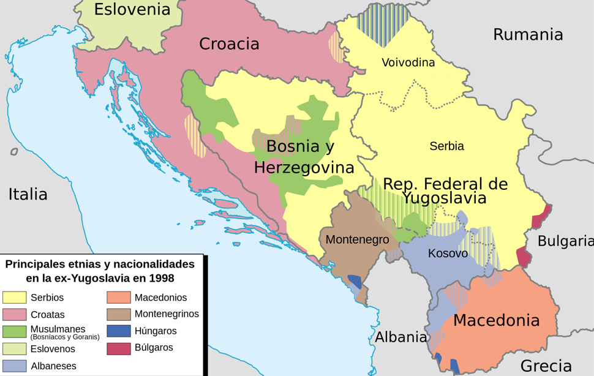
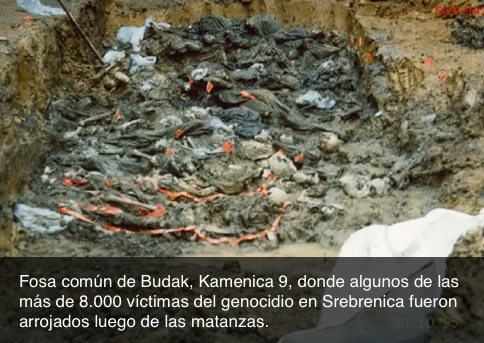

1995
Srebrenica
Yugoslavia ha sido, durante el siglo XX, la denominación que han recibido diversas entidades políticas ubicadas en Europa, al oeste de la península de los Balcanes.
Luego de haber sido un reino a comienzos del siglo pasado, fue abolido durante la Segunda Guerra Mundial, en el momento en que fue invadida por las potencias del Eje. Tras la victoria de los Aliados, se transformó en una República con diferentes denominaciones hasta que en 1963 pasó a llamarse República Federal Socialista de Yugoslavia.
Ese Estado estaba compuesto por seis repúblicas socialistas y dos regiones autónomas: Croacia, Serbia, Bosnia y Herzegovina, Eslovenia, Montenegro y Macedonia, como repúblicas, y Kosovo y Vojvodina como regiones autónomas. Todas ellas funcionaron bajo un régimen federal multicultural hasta su desmembramiento a comienzos de los años '90.
Serbia y Montenegro fueron quienes mantuvieron el nombre de República Federal de Yugoslavia, ya sobre otro territorio, hasta el año 2003. En ese año, el Estado pasó a llamarse directamente “Serbia y Montenegro”. Esto hasta 2006, cuando Montenegro se separó de la unión y Serbia también se transformó en un Estado en sí mismo.

El Estado yugoslavo federal constituido a mediados del siglo XX, se vio desestabilizado luego de la muerte de su “padre fundador”, Josip Broz, conocido generalmente como el mariscal Tito. Los nacionalismos, que habían estado sujetos a la “fraternidad comunista” resurgieron fuertemente, sobre todo en repúblicas como Serbia y Croacia. La crisis económica, enmarcada en el contexto de las crisis petroleras, tampoco colaboró para frenar los cambios políticos radicales que se sucedieron.
Los discursos de odio se construyeron basados en ideologías asentadas en temas como la identidad, la pureza y la seguridad. Es así que se reavivaron sentimientos como el de sometimiento, que algunos croatas experimentaban hacia determinados centros de poder, como Belgrado -capital serbia y de la Yugoslavia restante-; o la aspiración a mayores niveles de reconocimiento y poder por parte de sectores serbios que, además, sentían que sus sacrificios durante la Segunda Guerra Mundial no habían sido recompensados como lo merecían. El culto al pasado se sumó al nacionalismo belicista y la opción por un principio territorial basado en lo étnico se instaló definitivamente. Un territorio, un pueblo.
La idea de Estado-nación llevó a que las declaraciones de independencia se sucedieran: Eslovenia, Croacia, Macedonia, y finalmente Bosnia y Herzegovina, en ese orden. Serbia asumió los restos de Yugoslavia, asociada a Montenegro. Sin embargo, lo que parecía un proceso de democratización fue minado por la violencia proveniente de los sectores más radicales. El presidente yugoslavo Slobodan Milosevic comenzó a representar la idea de la Gran Serbia, milenaria y eterna. Hablaba de su resurgimiento y de ocupar el lugar que se le había negado hasta ese momento. Esto llevó a diversas agitaciones en Kosovo que derivaron en la supresión de su autonomía en 1990. Los serbios consideran Kosovo su hogar ancestral, expropiado por los otomanos 600 años atrás.
Los albaneses —grupo étnico mayoritario en Kosovo– ya que usurpaban su tierra; los croatas, asociados a los ustachas, colaboradores de los nazis que habían cometido atrocidades contra ellos durante la Segunda Guerra Mundial; y los musulmanes, vistos como herencia de la dominación del Imperio Otomano, pasaron a transformarse en los enemigos a enfrentar.
Croacia, el siguiente mayor poder en la ex Yugoslavia, también reclamó territorios para sí y se preparó para tomarlos. Por su parte, Bosnia y Herzegovina era la república más pluriétnica de todas las que integraban la ex Yugoslavia. La convivencia de comunidades religiosas era una herencia del sistema otomano al que habían estado sometidos estos pueblos, y en el que los bosnios –tan eslavos como serbios y croatas- se convirtieron mayoritariamente al Islam; lo que les deparó ciertos privilegios por sobre los cristianos hasta entrado el siglo XX.
Más allá de acusaciones recíprocas, y del apoyo que Belgrado ofreció a los serbios de Croacia para rebelarse, los líderes serbio y croata, Milosevic y Franjo Tudjman, se reunieron en forma secreta el 25 de marzo de 1991 para dividirse los territorios bosnios. Para esa fecha, ya Milosevic tenía el control del ejército yugoslavo y estaba preparado para la acción. Serbia se lanzó a la guerra sin miramientos ni reglas. Las milicias paramilitares Tigres de Arkan estuvieron listas para todo.
En junio de 1991 Eslovenia se separó de la federación, pero la guerra se resolvió en unos 10 días. Cuando Croacia lo intentó, el Ejército Nacional Yugoslavo no estaba dispuesto a permitirlo. En solo siete meses de enfrentamiento, el saldo ya era de aproximadamente 10.000 muertos y 700.000 desplazados de sus hogares.
En setiembre de 1991, Macedonia se independizó sin intervención yugoslava. Para fines de ese año, Bosnia estaba en la mira. El territorio tenía una población conformada por 43% de musulmanes, 35% de ortodoxos serbios y un 18% de católicos croatas. El régimen autoritario de Milosevic no garantizaba a los musulmanes un tratamiento adecuado, pero la independencia tampoco les aseguraba protección alguna. En cambio, croatas y serbios del país sí contaban con el respaldo de sus Estados. Siguiendo directivas de la comunidad internacional, Bosnia realizó un referéndum de independencia en marzo de 1992. El 99,4% de los votantes eligió separarse de Yugoslavia. Sin embargo, esto no fue aceptado por Belgrado y, con su respaldo, los serbios de Bosnia declararon su propio Estado dentro de Bosnia y Herzegovina, la República Srpska.
Los musulmanes se encontraron virtualmente indefensos. No contaban con una fuerza militar importante como para oponerse y tampoco les resultaba una solución escapar, abandonando sus tierras y hogares ya centenarios. Del otro lado, el ejército yugoslavo, dominado por los serbios, estuvo inmediatamente dispuesto a respaldar al nuevo Ejército Serbio de Bosnia.
Intelectuales, profesionales y artistas musulmanes y croatas fueron arrestados, torturados y, muchas veces, ejecutados; se destruyeron sitios culturales y religiosos asociados al Islam; se bombardeó indiscriminadamente a los civiles de varias ciudades; se instalaron campos de concentración en los que los detenidos se hacinaban; aparecieron hombres esqueléticos detrás de alambres de púas que recordaban la Shoá; se dieron deportaciones en vagones de carga y camiones repletos hasta la asfixia; las masacres fueron acompañadas de descuartizamientos, castraciones, violaciones de preadolescentes a las que se dejaba desangrar; se establecieron campos de violación; se buscó la destrucción psicológica al obligar a presenciar a familiares y amigos de las víctimas todas las atrocidades que se cometían; miles de personas fueron expulsadas de sus hogares y poblados, quemando posteriormente los mismos. No solo se trató de destruir sino también de degradar. En agosto de 1992, ya hubo organizaciones que hablaron de genocidio. A los dos años, las muertes musulmanas y croatas sumaban 100.000 personas.
Durante 1992, los serbios expulsaron y asesinaron tanto a musulmanes bosnios como a croatas. Posteriormente, las autoridades croatas se unieron a las serbias para destruir la Bosnia musulmana. A medida que la guerra avanzó, las atrocidades se cometieron por todos las partes involucradas. Se comenzó a utilizar el concepto de “limpieza étnica” para los procedimientos de eliminar a la población de un grupo étnico en territorios ocupados por otro.
En algún momento, se confió en que la comunidad internacional no permitiría otro genocidio en Europa e intervendría militarmente para ponerle fin, pero esto no sucedió. Su intervención sí fue importante en términos de ayuda humanitaria. El Consejo de Seguridad de la ONU impuso sanciones económicas, señaló responsables de las agresiones, envió misiones de paz, realizó tímidos ataques aéreos en abril de 1994, y hasta constituyó un tribunal de guerra para iniciar los juicios necesarios. Sin embargo, a cada amenaza verbal de su parte, había amenazas reales que se concretaban por parte de las fuerzas serbias (toma de rehenes de tropas de paz en noviembre de 1994 y mayo y junio de 1995), por lo que las potencias retrocedían. Se optó por crear seis “zonas de seguridad”: en Sarajevo -la capital bosnia que fuera sitiada por 46 meses-, en otras cuatro zonas densamente pobladas y en un enclave musulmán al este: Srebrenica.
El 6 de julio de 1995, las fuerzas de Ratko Mladic, comandante del ejército serbio de Bosnia, iniciaron el ataque a Srebrenica, ciudad de de 40.000 habitantes musulmanes. El 11 de julio, controlaban el lugar; habiendo tomado rehenes, incluso de la misión de paz que allí se encontraba. La evacuación esperada de la zona nunca llegó. Inmediatamente, los captores persiguieron a los que intentaron escapar, separaron a los hombres y jóvenes de las mujeres y asesinaron, en pocos días, a más de 8.000 varones musulmanes de esa localidad de Bosnia y Herzegovina.
Bajo la dirección del general Radislav Krstic, el 12 de julio 50 o 60 camiones y autobuses realizaron la deportación. Separaron a padres, hermanos, hijos, de sus esposas, hermanas o madres. Los transportes que trasladaron a las mujeres a las proximidades de Tuzla -otra zona de seguridad- fueron detenidos en el camino para que los paramilitares serbios pudieran violar a quienes eligieran.
Miles de los varones que nunca volverían fueron trasladados a un gimnasio, se les ordenó quitarse hasta la ropa interior para luego transportarlos, vendados, a plazas de ejecución en la pradera. Mientras llegaba su turno, debían esperar en autobuses o depósitos. En ocasiones, esos depósitos sirvieron para que los soldados serbios se apostaran en puertas y ventanas y abrieran fuego con sus rifles o arrojaran granadas dentro. Luego de los asesinatos, las topadoras preparaban el terreno para el siguiente grupo, llevando los cuerpos a las fosas comunes.
Luego de estos hechos y su constatación, y el exitoso levantamiento croata para recuperar sus territorios ocupados y expulsar a su minoría serbia, la Organización del Tratado de Atlántico Norte (OTAN) decidió comenzar los bombardeos contra el ejército serbobosnio. Lo hizo durante tres semanas ininterrumpidas. Esta vez, Slobodan Milosevic prefirió mantenerse al margen, por lo que el Ejército Nacional Yugoslavo no intervino y se limitó a esperar las negociaciones de paz. Los soldados musulmanes y croatas recuperaron algunos de los territorios ocupados.
En noviembre de 1995 se firmaron los Acuerdos de Paz de Dayton (Ohio, EE.UU.): Bosnia y Herzegovina se dividió en tres zonas “étnicamente puras”. El 49% del país pasó a manos de los serbios, que representaban el 31% de la población; el 25% fue para la minoría croata, que tenía el 17% de la población; y los pobladores musulmanes, el 44% de los habitantes del país, obtuvieron solo el 25% del territorio. El Estado de Bosnia y Herzegovina fue constituido como una estructura descentralizada conformada por dos entidades: la Federación de Bosnia y Herzegovina -habitada mayoritariamente por bosnios y croatas- y la Repúblia Srpska -habitada mayoritariamente por serbios-, ambas autónomas y poseedoras de su propio gobierno y Asamblea Nacional.
Por tanto, Bosnia y Herzegovina es hoy una república federal, soberana, aunque no en plenitud, ya que presenta una administración tutelada por el Consejo de la Unión Europea desde 1995, desconociéndose aun una fecha para el establecimiento de su plena soberanía. Srebrenica permanece como una pequeña ciudad al este de Bosnia y Herzegovina. Al momento, Srebrenica forma parte de la entidad República Srpska. Aun siguen apareciendo fosas comunes.

El 25 de mayo de 1993, el Consejo de Seguridad de la ONU estableció el Tribunal Penal Internacional para la ex Yugoslavia (TPIY). Fue el primero de su especie desde los establecidos en Nuremberg para juzgar los delitos del nazismo. Entre sus actuaciones, es de destacar la que llevó adelante con uno de los principales responsables del genocidio de Srebrenica: Radislav Krstic. Hasta ese momento, el general serbobosnio fue el oficial de más alta jerarquía llevado ante un tribunal internacional desde 1945. Su caso no solo lo involucraba a él como responsable de atrocidades cometidas durante la guerra. También fue un caso inaugural para determinar si en Bosnia las fuerzas serbias habían cometido genocidio. La evidencia demostró la cuidadosa elaboración del plan de exterminio de la población de hombres y muchachos de Srebrenica y la velocidad con la que se lo llevó a cabo. En agosto de 2001, luego de 16 meses de juicio, el juez principal le comunicó a Krstic que era culpable de genocidio. Se establecía que Krstic había sido absolutamente consciente de los efectos que causaría la muerte de todos los hombres para el futuro del grupo víctima. Las bases de reproducción de los musulmanes bosnios en ese lugar habían sido definitivamente atacadas. Fue condenado a 46 años de prisión.
En 1993, el Estado bosnio presentó una demanda contra la República Federal de Yugoslavia -la actual Serbia- por la comisión de genocidio. Luego de 14 años de proceso, la Corte Internacional de Justicia de La Haya -máxima autoridad jurídica de la ONU- falló en 2007. Si bien definió la masacre de Srebrenica como genocidio, no consideró responsable a la entonces República Federal de Yugoslavia ni, por ende, a sus sucesoras. Consideró, sí, que Belgrado había violado la Convención sobre Genocidio de 1948 al no actuar para prevenir la masacre ni castigar a sus responsables. También le reclamó la entrega de Ratko Mladic, el líder de la toma de Srebrenica. La Corte sostuvo que la República Federal de Yugoslavia había tenido “influencia” sobre las actuaciones de las fuerzas serbobosnias pero no “el control” de las mismas.
Ratko Mladic fue arrestado el 26 de mayo de 2011 en Lazarevo, Serbia. El 31 de mayo de 2011 fue extraditado a La Haya y su caso fue formalmente abierto el 16 de mayo de 2012. En 2016, aun se encontraba en proceso.